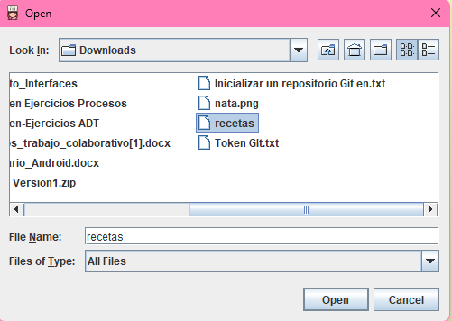

Cargar Archivo de Recetas
Esta funcionalidad te permite cargar un archivo de recetas (en formato .txt) para añadirlo a la aplicación.
Pasos:
- Haz clic en el botón Cargar archivo de recetas.
- Selecciona un archivo .txt desde tu computadora.
- Presiona Abrir para cargar el archivo y visualizar las recetas.
